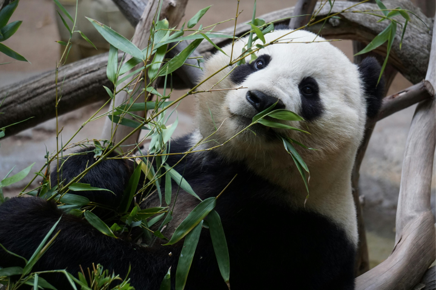

Dolphins
Facts:
- They’re marine mammals, so they aren’t fish
- They breathe through the blowhole on the top of their heads
- They can communicate by squeaking and whistling
- They’re mega predators and can eat over thirty-three pounds of fish a day
- They like to kill baby proposes just for the sake of doing it
- Male dolphins will kill baby dolphins to mate with female dolphins
- They’ve been observed mating with dead things
My Opinions:
While dolphins make cute sounds and their tricks can be adorable, they're big jerks.
They should be recognized as the scary marine mammals they are.
 picture source
picture source
Pandas:
Facts:
- Their diet is 99% bamboo
- They can swim and climb trees
- They spend ten to sixteen hours a day eating
- They will occasionally do hand stands when they pee
- They poop, like, a lot
- They like to roll around
- They are not good at breeding
My Opinions:
Pandas are adorable even if they're a bit odd. I love wathcing them roll around.

picture source
Sources:
Dolphin Facts 1
Dolphin Facts 2
Panda Facts 1
Panda Facts 2